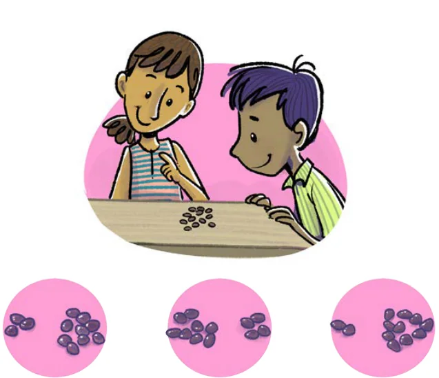
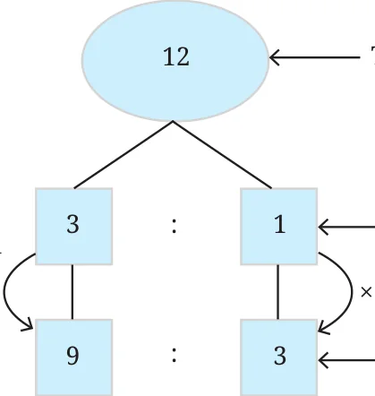
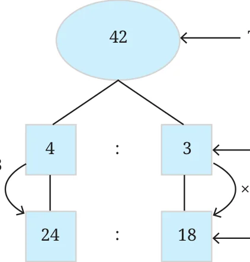

Activity 3: Form a pair. Collect 12 countable objects or counters (it can be coins, seeds, or pebbles). Now, share them between the two of you in different ways.
If you divide them equally, what is the ratio of the number of counters with each of you? Each of you will get 6 counters. So, the ratio is 6 : 6, or 1 : 1 in its simplest form. Now let us not share equally.
If your partner gets 5 counters, how many objects will you get? What is the ratio of the counters?

The ratio of the counters of your partner to yours is 5 : 7. Now, if you want to share the counters between the two of you in the ratio of 3 : 1, how many counters would each of you get? Share the counters in different ways and see which combination is in the ratio 3 : 1. One way to share the counters in the ratio of 3 : 1 is as follows -
- Your partner takes 3 counters and you take 1 counter. There are now 8 counters left.
- Your partner takes 3 more counters and you take 1 more counter. There are now 4 counters left.
- Your partner takes 3 more counters and you take 1 more counter.
There are no more counters left. So, your partner gets 9 counters in total and you get 3 counters. When we divide 12 counters in the ratio of 3 : 1 between two people, one gets 9 counters and the other gets 3 counters.

Sharing 12 The ‛whole’ is \(4 (= 3 + 1)\) in the ratio 3 : 1 and 12 is 3 times 4
\(\times \times\)
Now, if you want to share 42 counters between the two of you in the ratio of 4 : 3, how will you do it? Using the same procedure would take a long time! There is a simpler way to share the whole with parts in a specified ratio. You need to divide 42 into groups such that your partner gets 4 groups and you get 3 groups.
What is the size of each group? If your partner gets 4 groups and you get 3 groups, the total number of groups is 7. So, the size of each group is \(42 \div 7 = 6\). Multiplying the number of groups by the size of each group, your partner gets 24 counters and you get 18 counters, when you share 42 counters in the ratio of 4 : 3.


Sharing 42 The ‛whole’ is \(7 (= 4 + 3)\) in the ratio 4 : 3 and 42 is 6 times \(7 \times \times\)
In general, when we want to divide a quantity, say x, in the ratio m: n, we do the following:
- We need to split x into groups such that it can be divided into two parts where the first part has m groups and the second part has n groups.
- But what is the size of each group? This can be found out by dividing x by the number of groups. The number of groups are \(m + n\). So, the size of each group is \(\frac{x}{m + n}\) .
- So, the first part has \(m \times \frac{x}{m + n}\) objects and the second part has \(n \times \frac{x}{m + n}\) objects.
Thus, if we want to divide a quantity x in the ratio of m: n, then the parts will be \(m \times \frac{x}{m + n}\) and \(n \times \frac{x}{m + n}\) . We see that
\(m \times \frac{x}{m + n} : n \times \frac{x}{m + n} :: m : n\).
Example 11: Prashanti and Bhuvan started a food cart business near their school. Prashanti invested ₹75,000 and Bhuvan invested ₹25,000. At the end of the first month, they gained a profit of ₹4,000. They decided that they would share the profit in the same ratio as that of their investment. What is each person’s share of the profit? The ratio of their investment is 75000 : 25000. Reducing this ratio to its simplest form, we get 3 : 1. \(3 + 1\) is 4 and dividing the profit of 4000 by 4, we get 1000. So, Prashanti’s share is \(3 \times 1000\) and Bhuvan’s share is \(1 \times 1000\). So, Prashanti would get ₹3,000 and Bhuvan would get ₹1,000 of the profit.
Example 12: A mixture of 40 kg contains sand and cement in the ratio of 3 : 1. How much cement should be added to the mixture to make the

Let us find the quantity of sand and cement in the original mixture. The ratio is 3 : 1 and the total weight is 40 kg. So, the weight of sand is \(\frac{3}{3 + 1} \times 40 = 30\) kg. The weight of cement is \(\frac{1}{3 + 1} \times 40 = 10\) kg. The weight of sand is the same in the new mixture. It remains 30 kg. the new ratio of sand to cement is 5 : 2. So the question is,
5 : 2 :: 30 : ?
If the ratio is 5 : 2, then the second term is \(\frac{2}{5}\) times the first term. Since the new ratio is equivalent to 5 : 2, the second term in the new ratio should also be \(\frac{2}{5}\) times of 30.
\(\frac{2}{5} \times 30 = 12\).
The new mixture should have 12 kg of cement if the ratio of sand to cement is to be 5 : 2. There is 10 kg of cement already. So, we need to add 2 kg of cement to the original mixture.